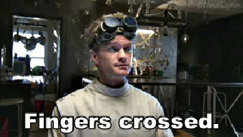

http://visual.klamp.in
@klamping
Up and Running with Visual Regression Testing
I'm Kevin Lamping
Front-end Engineer at Four Kitchens.
I'm really excited about this.
I hate manual testing.
Change Blindness
When I Change the CSS

Not a Sustainable Test Plan

The Tools
- Wraith
- Gemini
- WebdriverCSS
There are many many more (like DiffUX, DPXDT)
Demo Time
Things
- Static content helps
- Not perfect
- Take tiny steps